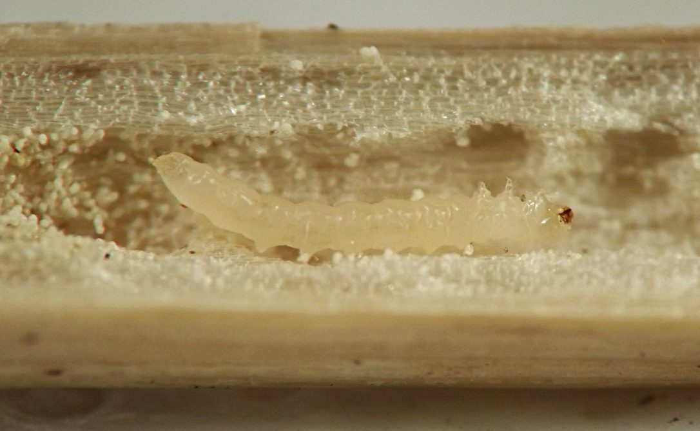
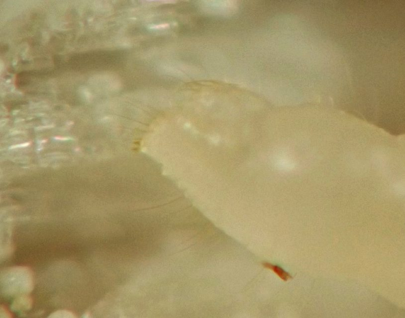
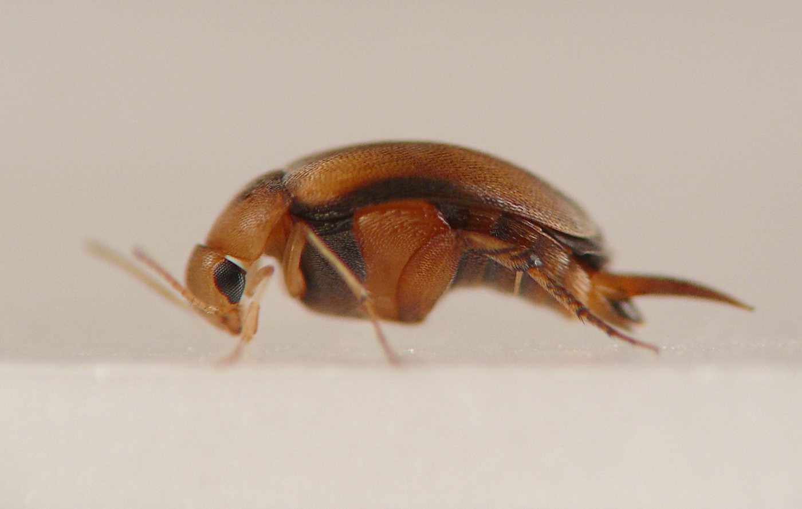
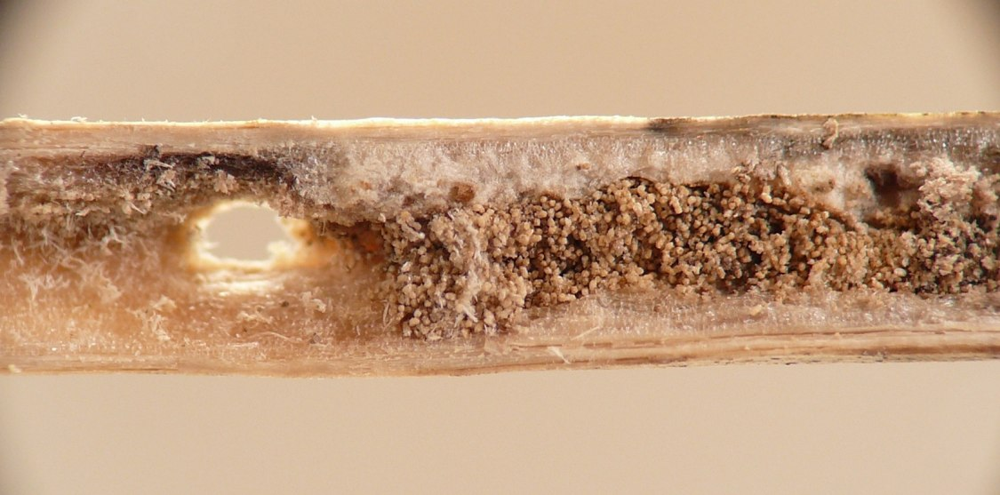

Stem borer (Coleoptera: Mordellidae) in Alliaria
| Record no.: | 0036 |
|---|---|
| Feeding guild: | Stem borer |
| Taxonomy: | Coleoptera: Mordellidae |
| Stages observed: | trace, larva |
| Distribution observed: | IA |
| Hosts in Alliaria: | A. petiolata (garlic mustard) |
In December 2022 I found a young larva overwintering in a tunnel in the pith of a stem. The larva was a pale whitish color, with dorsal ampullae and diminutive paired urogomphi that were triangular in lateral view. I did not rear it to adulthood.
Later, in December 2024 I found similar mordellid larvae overwintering in garlic mustard dead stems in my yard. I reared one of these to adulthood in early 2025. The adult was a very small mordellid, brick-red overall with some darker shades of reddish-black on the outer edges of the elytra and the underside of the second thoracic segment. It left a roundish exit hole in the stem when it emerged.

 Prev
Prev



{kind=link}
{kind=link}
{kind=link}
{kind=link}

Page created: February 9, 2026. Last update: April 3, 2026